Fun Projects for your LEGO� MINDSTORMS� NXT!
|
|
Fun Projects for your LEGO� MINDSTORMS� NXT! |
| Echo Telegraph |
|

1
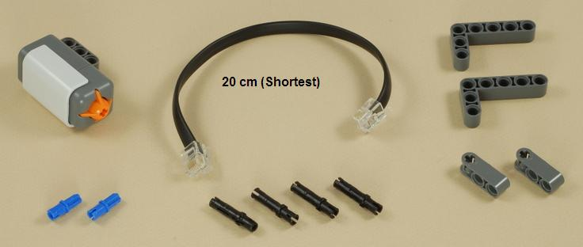
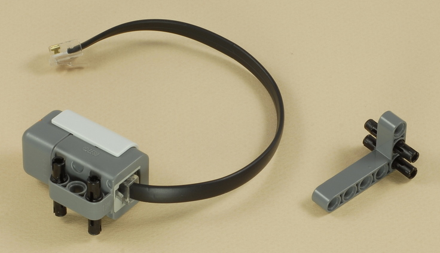
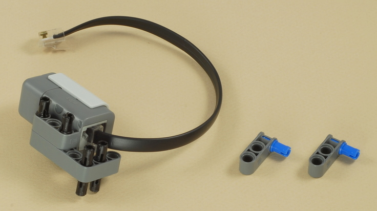
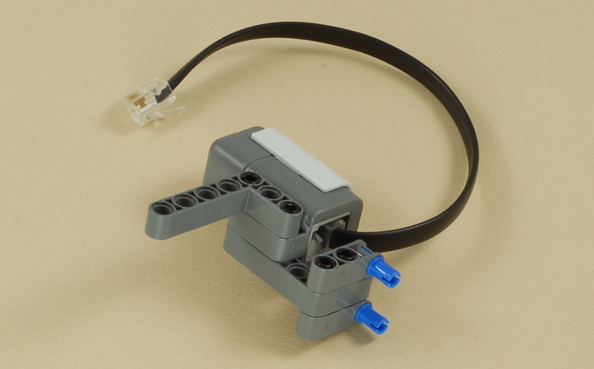
2
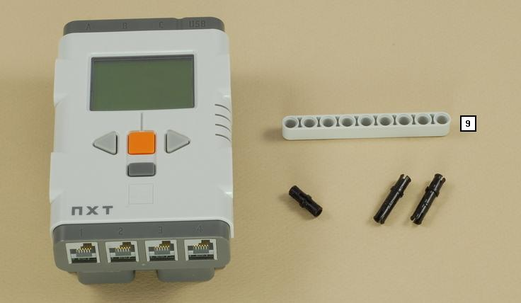
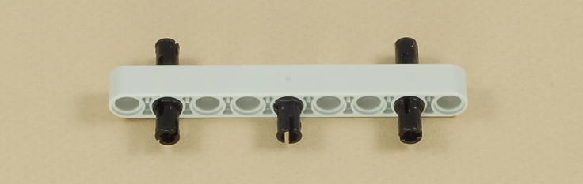
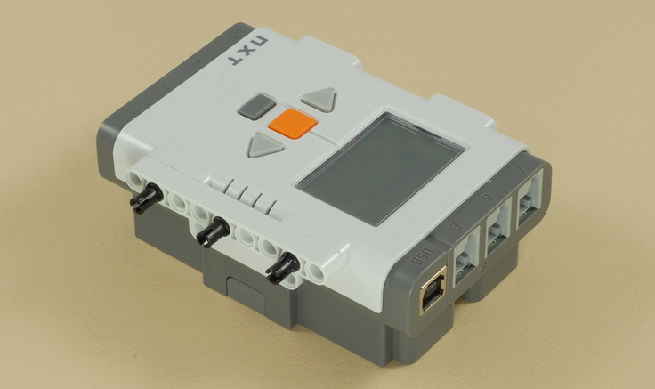
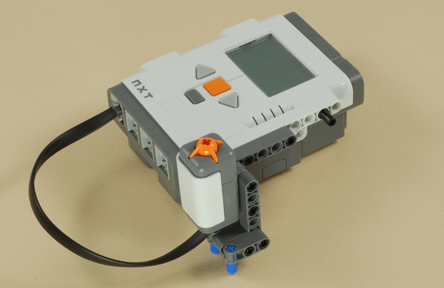
3
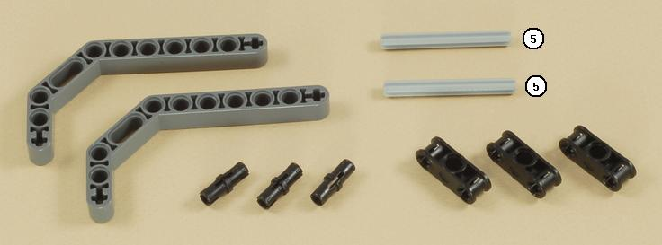
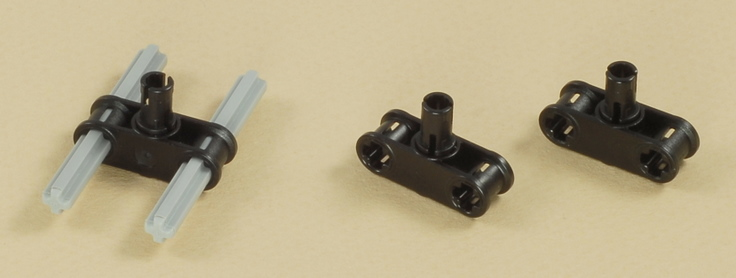
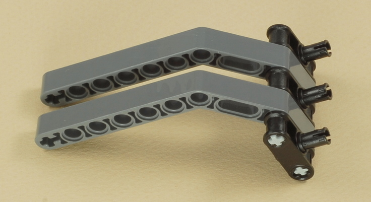
4
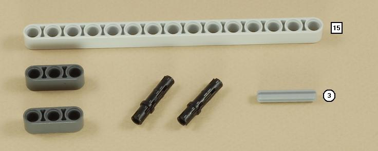
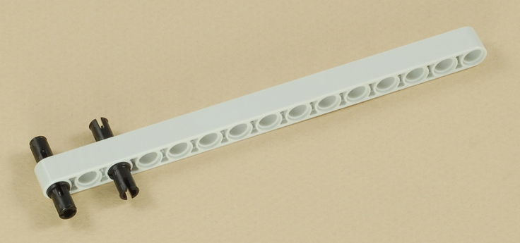
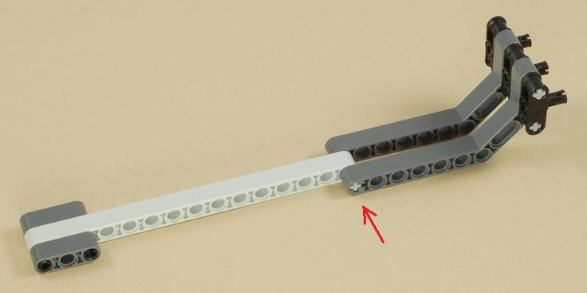
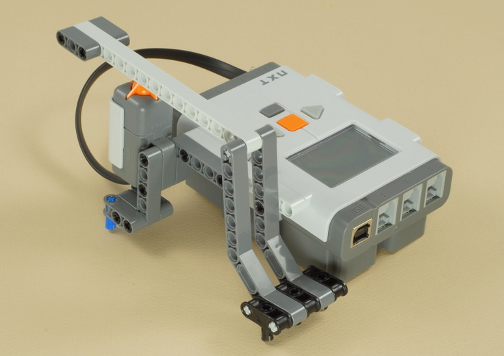
5
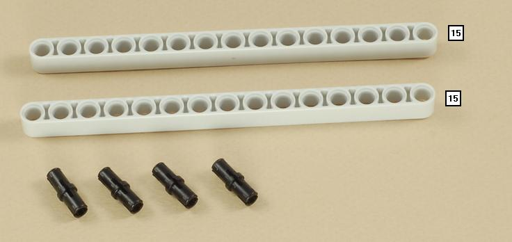
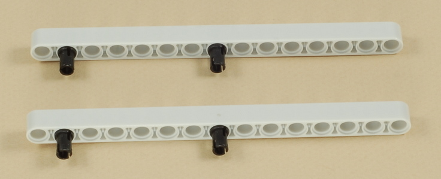
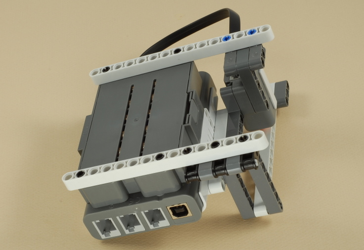
| Echo
Telegraph Programming Use the Rhythm_Echo program for the Echo Telegraph. This program uses the File Access block to store the rhythm timing numbers in a data file, and then reads back the numbers so that it can copy your rhythm. When the program displays "Ready", tap out any rhythm on the telegraph lever. You can also hold down the lever to get longer tones. When you leave the button alone for 2 seconds, the program will think the rhythm is done, and then it will play it back for you. |
Challenges
|
|
Copyright
�
2007-2009 by Dave Parker. All rights reserved. |